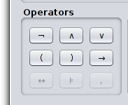
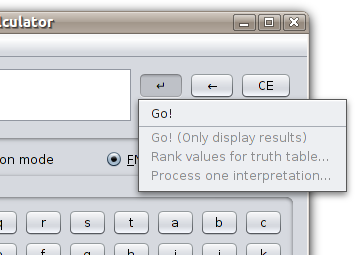
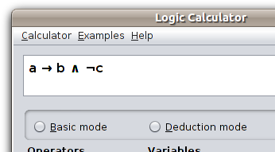
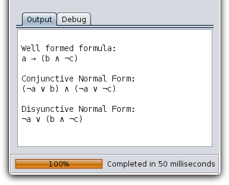
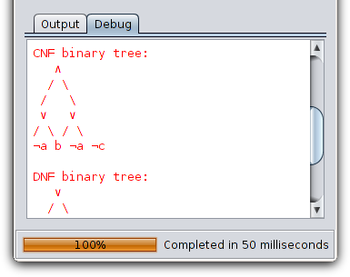

In Conversion mode we have avaliable the following operators to use:

Also we have only the Go option to perform the conversion:

For example, given the formula:

Go option displays the the Disjunctive Normal Form and the Conjunctive
Normal Form of the input formula:

Finally, Debug tab display additional data as the tree of the normal forms build by the Logic Calculator:
